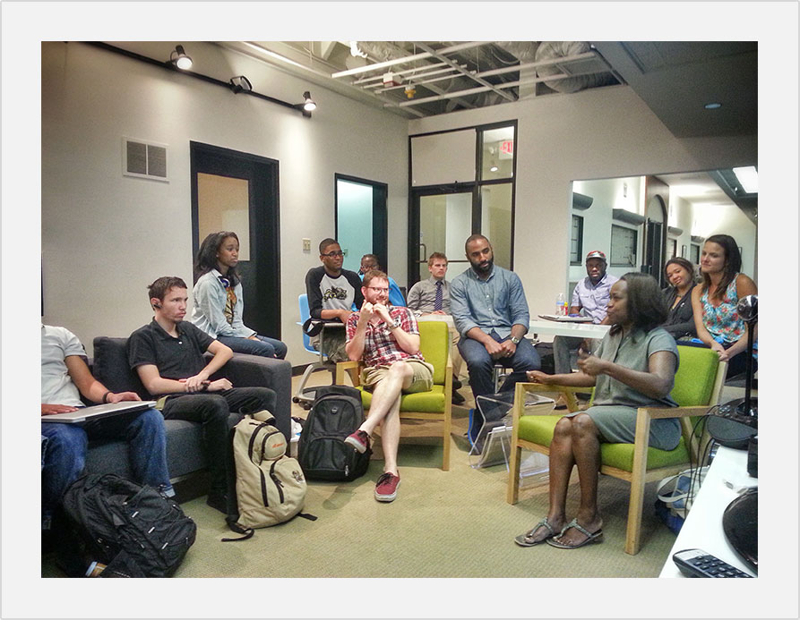

Operation SPARK started in September 2013 as a pilot project, developed and conducted at youth community centers around New Orleans, teaching young adults how to build simple mobile video games and apps with the aim of igniting the pursuit of an employable passion.
Student participants learned to design, build and deploy simple mobile apps and games. Teachers and mentors inspired students in grasping skills necessary to complete project tasks.
In July of 2014, in partnership with 4.0 Schools and Positive Space, Operation Spark ran its first Summer Boot Camp, a 5 week 3 hour per day intensive program, piloted by John Fraboni and Sam Battan and supported by Mikey Muhanna, Saskia Leggett and the staff of 4.0 Schools.
During Summer Boot Camp, students were immersed in the fundamentals of HTML5 and JavaScript in the Node.js environment. Working in teams they were taught by professional developers to build simple command-line games and apps in Node.js, then fronted those games and apps in an HTML5 client.
Our Boot Campers also learned a great deal about themselves, gaining soft skills toward job readiness, and learned video screen casting with Andrew Larimer of FatHappy Media, studied the sweet stylings of CSS under Chris Boudy of Teens for Tech, and were addressed on life as a professional by guest speakers Brian Bordainick of Dinner Lab, Barrett Conrad of Cotingasoft, and Uchechi Kalu Jacobson and Peter Jacobson of Wedocracy.
As a participant in 4.0 Schools' 2014 Summer Launch program, Operation Spark received both the Judges' Prize and the Audience-Choice Award in New York on August 21st, 2014.
Operation Spark officially launched as a non-profit on August 5th, 2014.
Our objectives are aimed at providing access for all - literacy in software creation for all youth in Louisiana! Through our boot camps, teacher training and Studio Spark Apprentice programs, we anticipate impacting 25,000 youth over the five years! You can help us acheive our goals by supporting Operation Spark.